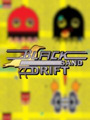

Black Sand Drift
Black Sand Drift
Detalles
|  | |
| Tiempo de juego | 2h 8m 0s |
| Última actividad | 16/09/2016 20:15:21 |
| Añadido | 23/07/2021 17:30:25 |
| Modificado | Nunca |
| Estado de finalización | Jugado |
| Librería | Steam |
| Fuente | Steam |
| Plataforma | PC (Windows) |
| Fecha de lanzamiento | 08/09/2016 |
| Puntuación de la Comunidad | 64 |
| Puntuación de la Crítica | |
| Puntuación de usuario | |
| Género | Casual Indie |
| Desarrollador | Echo Hall Studios |
| Editor | Sometimes You |
| Característica | Partial Controller Support Single Player Trading Cards |
| Enlaces | Community Hub Discussions Guides News Store Page PCGamingWiki |
| Tag | |
Descripción
For over 300 years, the five planets of the Kotiro galaxy and its citizens have struggled under the heavy hand of maniacal, mechanical bots called Spiral. As the metallic army's relentless pursuit of the resource Black Sand begins ramping up exponentially, a few brave heroes decide to fight back.
Enter Black Sand Drift: A wholly unique shooter built from the ground up with the PC in mind. So what makes this SHMUP stand out from the crowd? Well, to begin with, there is a heavy emphasis on characters and story; and through the 25 levels spanning 5 different locals, the dialog driven narrative will play out with lots of interesting and strange revelations culminating in a spectacularly whimsical finale.
Created with the keyboard in mind, using the WASD in combination with the SPACEBAR feels tight and responsive; a must for any game challenging you with leaderboards. And because there are 25 separate local and online boards to tackle, you will appreciate the smooth controls. The ARROW keys and CONTROLLER support are also available as alternatives!
The music consists of 25 tracks—1 for each level—featuring guitars, bass, drums and vocals; a rarity for such games of the same creed. Every aspect of Black Sand Drift has been intentionally tweaked to present you with something wholly unique from anything you've played before.
Between the music, controls, graphics, breadth of story and overall experience, I hope you find something here that truly inspires and evokes the emotions we all crave as dedicated gamers. Thank you for checking out Black Sand Drift!

The Tilda’s default weapon's system fires an automatic stream of bullets, giving the player a means to fight the deadly Spiral forces. However, this is not the only weapon at your disposal; there are also 15 powerful Special Weapons spread out among the 25 levels.

Characters:

Extras:
For every level you beat (without cheating), you will unlock a special image accessible from the main menu; everything from concept art to alternate versions of characters and more, all straight from the pages of our sketchbooks.

Enter Black Sand Drift: A wholly unique shooter built from the ground up with the PC in mind. So what makes this SHMUP stand out from the crowd? Well, to begin with, there is a heavy emphasis on characters and story; and through the 25 levels spanning 5 different locals, the dialog driven narrative will play out with lots of interesting and strange revelations culminating in a spectacularly whimsical finale.
Created with the keyboard in mind, using the WASD in combination with the SPACEBAR feels tight and responsive; a must for any game challenging you with leaderboards. And because there are 25 separate local and online boards to tackle, you will appreciate the smooth controls. The ARROW keys and CONTROLLER support are also available as alternatives!
The music consists of 25 tracks—1 for each level—featuring guitars, bass, drums and vocals; a rarity for such games of the same creed. Every aspect of Black Sand Drift has been intentionally tweaked to present you with something wholly unique from anything you've played before.
Between the music, controls, graphics, breadth of story and overall experience, I hope you find something here that truly inspires and evokes the emotions we all crave as dedicated gamers. Thank you for checking out Black Sand Drift!
The Tilda’s default weapon's system fires an automatic stream of bullets, giving the player a means to fight the deadly Spiral forces. However, this is not the only weapon at your disposal; there are also 15 powerful Special Weapons spread out among the 25 levels.
Characters:
Extras:
For every level you beat (without cheating), you will unlock a special image accessible from the main menu; everything from concept art to alternate versions of characters and more, all straight from the pages of our sketchbooks.